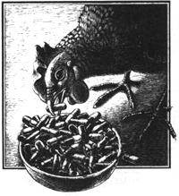

Modern agriculture is rushing us into an unintended but dangerous form of genetic engineering.
Antibiotics and Meat
Nowadays, it's so simple and inexpensive to take an oral dose of tetracycline or amoxicillin to fight off an infection that most of us take antibiotics for granted. The time may be rapidly approaching, however, when we'll have to learn what it's like to do without these drugs . . . in large part because of the way American agribusiness raises meat!
To understand this bizarre connection, we'll need to review the nature of antibiotics themselves. Antibiotics are chemicals derived from the toxins one microorganism generates to fight off the assault of another.
Though we know that the Chinese used moldy bean curd to treat carbuncles and boils several millennia ago, it wasn't until 1928 that Sir Alexander Fleming discovered that a mold, penicillin, actually killed competing bacteria. When penicillin was synthesized in useful, therapeutic concentrations in 1941, many infectious diseases that had been practically uncontrollable finally became treatable. Between 1943 and 1960, the annual production of penicillin soared-from 29 pounds to 860,000 pounds-and the fatality rates associated with various diseases plummeted.
Truly, the description "wonder drugs" aptly reflected the early success of antibiotics in treating disease. For the first time, doctors had medicine that actually attacked the cause of bacterial disease. However, not long after antibiotics began to see widespread use, scientists discovered an alarming trend. Some bacteria were developing resistance to antibiotics . . . they were effectively selecting for a stronger strain of microorganism! And these resistant bacteria could run rampant when a constant barrage of wonder drugs wiped out their nonresistant competitors.
It was another decade, though, before the full effects of bacterial resistance to antibiotics were felt. In 1968, Shigella dysenteriae (a virulent strain of dysentery) broke out in Guatemala and spread throughout Central America over the course of three years. Doctors assumed that they were dealing with amoebic dysentery when the four antibiotics of choice-streptomycin, tetracycline, chloramphenicol, and sulfonamide-had no effect. By the time the real cause, resistant bacteria, was discovered, tens of thousands had died.
Part of the reason that it took so long to recognize the significance and extent of bacterial resistance to antibiotics is that no one anticipated the means by which resistance is passed from one cell to another. If resistant strains developed only through the reproduction of strong survivors and chromosomal mutation-as was initially assumed-it would take a long time for large cultures of resistant bacteria to develop.
Unfortunately, as Japanese researchers discovered in the late 1950s and early 1960s, bacteria have a much more efficient means of transmitting resistance. Dr. Tsutomo Watanabe found that, in the case of some microbes, drug resistance could be passed from one bacterium to another in the form of R (resistance) plasmids, pieces of DNA not directly linked to or affecting the chromosome. These plasmids, which can number up to 2,000 per cell, are directly transferred from cell to cell, through a connection called a pilus, without otherwise affecting the donor or recipient. Thus, instead of facing the extended process of mutation (a probability of less than 1 in 10,000,000) and natural selection, resistance DNA can be passed from one group of cells to another in a matter of minutes. What's more, the bacteria involved need not be of the same species; for example, Escherichia coli (a prevalent intestinal bacterium) readily becomes resistant and transfers that resistance to salmonella or Shigella dysenteriae.
In the December 1967 issue of Scientific American, Dr. Watanabe wrote, "Unless we put a halt to the prodigal use of antibiotics and synthetic drugs, we may soon be forced back into a pre-antibiotic era." It was an outcry that few heeded at the time. But by 1982, the Lancet reported that 90% of Staphylococcus aureus bacteria (which infect surgical incisions) were resistant to penicillin and that 35% of E. coli were resistant to ampicillin.
Though doctors and scientists don't agree about the severity of the problem, many physicians are now exercising restraint in prescribing antibiotics. For example, the use of antibiotics for cold and flu viruses, against which they are entirely ineffective, has practically ended. Doctors have recognized that antibiotics are a depletable resource that needs to be saved for really serious health problems. Meanwhile, new (and much more expensive) antibiotics are under development to replace those that have become ineffective. But trying to keep up with the expanding inventory of resistant bacteria is a constant battle.
Unfortunately, even if all physicians exercised thorough restraint in the use of antibiotics, there would still be a tremendous influx of these substances into the environment. Nearly half the volume of antibiotics produced in the U. S. each year-about 15,000,000 pounds, worth almost $250,000,000-is fed to animals. Penicillin, tetracycline, and other such medications are routinely mixed into the feed of the majority of livestock in this country . . . not mainly to stave off disease but, instead, in efforts to increase growth rates.
In 1949, Dr. Thomas Jukes-who then worked for Lederle Laboratories, the company that discovered chlortetracycline (Aureomycin)found that feeding the wastes from the production of chlortetracycline to baby chickens increased their growth rate by 10 to 20%. Continued research showed that the effect was at least as pronounced on piglets and calves. Companies such as American Cyanamid (the parent of Lederle and the largest producer of veterinary tetracycline) claim that giving doses of antibiotics well below those that would be used to treat disease (a procedure called subtherapeutic administration) can return $3.00 in improved feed-conversion efficiency for every dollar invested.
Dr. Jukes' discovery did much to make a whole new sort of farming possible. Antibiotics have made it more practical to confine animals where they can be fed controlled doses of commercial feeds, rather than allowing them to range. And, because of the medicinal properties of the antibiotics, animals can be kept in such crowded conditions without serious outbreaks of disease. Antibiotic-supplemented rations have made possible the modern-day feedlot . . . an efficient method of raising fowl, pigs, or cattle that has done much to make the small, low-intensity family farm uneconomic.
At the same time, the volume of antibiotics and their by-product, resistant bacteria, has burgeoned. According to an Office of Technology Assessment report in 1979, 99% of all poultry, 70% of beef cattle and veal, and 90% of swine receive routine subtherapeutic doses of antibiotics. It's now nearly impossible to find livestock that don't have significant populations of resistant bacteria, whether or not they've actually been fed antibiotics. The resistant strains quickly pass from one animal to another in confinement and have even been reported to mysteriously travel several hundred yards between pens.
Those groups opposed to, and those in favor of, subtherapeutic use of antibiotics in livestock spent most of the 1960s and '70s arguing about whether resistant bacteria developed in animal populations could be transferred to and infect humans. Today it's fairly clear that this does happen, but there's still much argument about how widespread the problem is.
Most bacteria present in cattle, for example, don't seem to do well in humans . . . each species has its own set of microorganisms well adapted to their particular environment. An exception, however, is the genus Salmonella, with its ten common species. In England, a rash of 305 cases of Salmonella typhimurium in the '60s and early '70s-an outbreak that resulted in the deaths of two adults and a child-led that country to ban subtherapeutic use of antibiotics. In 1976, there was a Salmonella heidelberg outbreak in Connecticut. The bacteria were found in calves, then in the farmer who kept the calves, then in his pregnant daughter, then in his daughter's baby three days after birth, and finally in other babies kept in the same hospital nursery. At the time, it wasn't possible to prove the existence of a direct path for the salmonella from the calves to the babies in the nursery, but the circumstantial evidence was very strong.
The most heralded example of salmonella transfer from livestock to humans-the one that seems finally to have proven the link to most scientists' satisfaction-occurred two years ago but has only recently received much publicity. A Minnesota couple became seriously ill after taking penicillin for a cold and were found to be infected by a resistant strain of Salmonella newport. A Centers for Disease Control researcher, Dr. Scott Holmberg, was brought in and used a new technique called genetic fingerprinting to track the salmonella to hamburger, back through a supermarket, and finally to a South Dakota farm where a herd of cattle was being fed subtherapeutic doses of chlortetracycline.
Dr. Holmberg eventually traced the same strain of Salmonella newport to 18 other peo ple in four states. Eleven had been hospitalized, and one had died. Most of the infected people had handled the meat from the farm before it was cooked. Salmonella are killed by heat-as yet, there's little evidence that eating cooked meat from livestock raised on antibiotics is in itself unhealthy-but the bacteria are so virulent that they were able to enter the bodies of the people who had prepared or otherwise come in contact with the raw meat. What's more, 12 of the 18 had been taking penicillin or other antibiotics for cold symptoms.
After 25 years of effort, the mechanisms that had long been suspected were established: Antibiotics fed to animals had created a resistant strain of bacteria for which the fatality rate in humans was 21 times higher than for non resistant strains . . . and antibiotics taken directly by the people had cleared the way for the disease-causing microorganisms.
As alarming as it is that diseases made resistant by antibiotics can be transferred from animals to people, that threat to human health may be small compared with the possibility-indeed, the likelihood-that antibiotics are gradually becoming ineffective treatments for many diseases as resistance is transferred from one type of bacteria to another.
When England banned subtherapeutic use of antibiotics, the decision was based in part on a study showing that while 30% of Salmonella typhimurium were resistant in 1963, fully 73% had become resistant by 1979. A more alarming fact is that even if animals are fed only one antibiotic, their bacterial cultures may develop resistance to a variety of other antibiotics at the same time. Today in the U.S. approximately 25% of the salmonella infections in humans are resistant to drugs.
It may be that the overprescribing of antibiotics for people bears a similar responsibility for the development of resistant strains of bacteria, but the fact remains that the use of antibiotics in animals certainly adds to the problem. Though most of the bacteria that inhabit a cow's intestinal tract are different from those that live in humans, there's no distinguishable difference between the carriers of resistance: the R plasmids. Even though E. coli from cattle may be expelled by humans within a day, these able carriers of resistance can work numerous transfers during their stay. The routes of travel are mind-boggling, and the bacteria's persistence is remarkable. Some of us may bear a bigger burden of R plasmids than others, but it's safe to say that nearly all of us have some . . . and that the number is increasing.
North American countries stand practically alone among developed nations in allowing the indiscriminate use of antibiotics in animals. Czechoslovakia, Denmark, England, the Netherlands, Norway, Sweden, and West Germany all require veterinary prescriptions for animal antibiotics. In the U.S., however, the director of the FDA's Center for Veterinary Medicine, Lester M. Crawford, has been unsuccessfully pursuing a ban on subtherapeutic use of antibiotics since 1977. It seems that each year since 1979 the House of Representatives Appropriations Committee has written a clause into the FDA budget which specifically prohibited the agency from restricting antibiotic use in animals until further research was completed!
The last of the research work requested, a study of food poisoning in Seattle from poultry that was fed antibiotics, was finished early this year. There now seems to be little question that routinely feeding antibiotics to animals presents a threat to human health. The remaining question is, What exerts more pressure in Congress-corporate pharmaceutical and farming interests, or a cry of public outrage? Let Representative Jamie Whitten, Chairman, House Appropriations Committee, 2362 Rayburn H.O.B., Washington, DC 20515, know what you think.
As of July 1, 1985, the FDA had taken no direct action to restrict the subtherapeutic use of antibiotics in livestock. However, two bills have been introduced in Congress. H.R. 616 would prohibit the use of antibiotics that increase the resistance of pathogenic bacteria. H.R. 2379 would restrict the importation of meat from antibiotic-treated animals.
|
 |
|
|